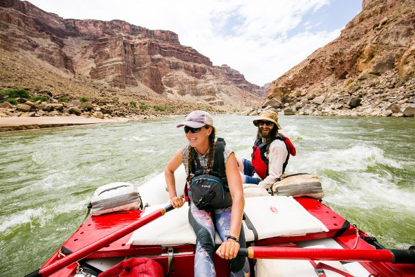
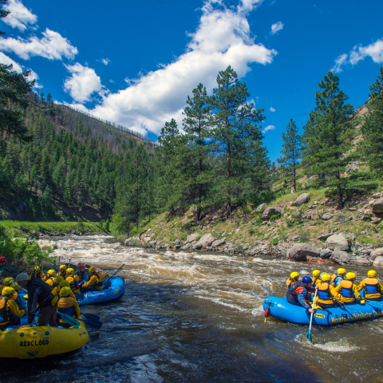
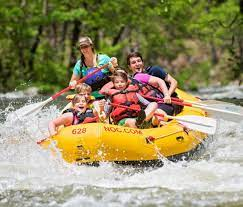
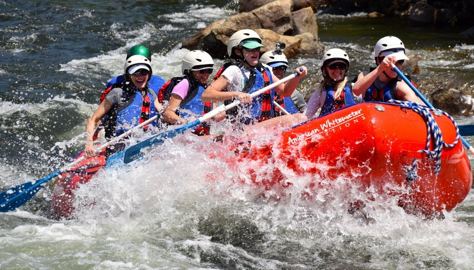

Contact Us
Have any questions or need assistance?
Vernal, Utah
Crystal-clear water flows out of Utah’s Flaming Gorge Reservoir. Vernal, UT is the beginning of your Green River whitewater rafting tour. On our three day Flaming Gorge rafting adventure, you’ll be left speechless when you witness the grandeur of the Green River and Flaming Gorge country. The waters of Utah’s Green River provide some the most prized trout fishing in the world. This section of the Green River has super-fun class II rapids with names like Mother-in-Law and Red Creek.
Glewood, Colorado
The Colorado River raft trip that travels through the Class III Shoshone rapids offers a nice balance of fast-moving and gentle water. This trip is available to beginners, since most of the Colorado River is mellow as it flows through Glenwood Canyon on its way to Glenwood Springs.
Nantahala
Experience the delights of the Nantahala River and its beauty on a fully guided raft trip. Our skilled and friendly guides and the playful Nantahala make this an excellent introduction to whitewater rafting. Perfect for first-timers ages 7 and up or 60 lbs.
South Forke Lower Gorge
Our 15-mile South Fork Lower Gorge rafting day trip is suitable for nearly everyone, from ages 6 to 106, including families with young children, big and small corporate groups, youth and church groups, as well as Girl and Boy Scout groups. For the past 40+ years, the South Fork American River has served as a perfect introduction to California rafting adventures for hundreds of thousands of rafters.
| Trip Name | Duration | Price |
|---|---|---|
| Trip 1 | 7 days | $1,000 |
| Trip 2 | 10 days | $1,500 |
| Barcelona | 3 days | $800 |
| Barcelona | 3 days | $800 |